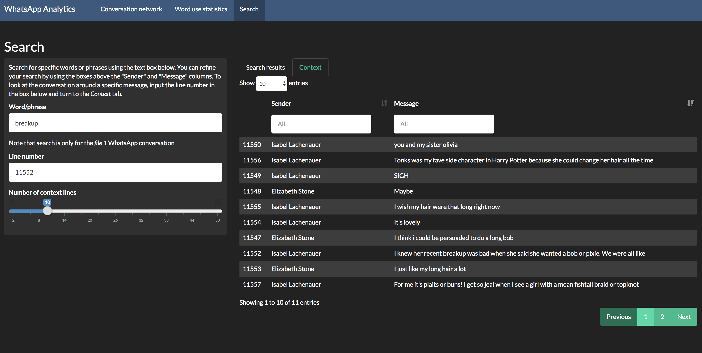

WhatsApp conversation analyser
I got the idea for this project during the second year of my masters degree. Two of my close friends - Debbie and Liam - and I had a very active WhatsApp conversation, one that I thought would cover most of my experiences at Oxford. At one point I downloaded the message thread to check the number of words and came up with something around 110,000. We'd basically written a short novel through our phones.
But other than scrolling through it there wasn't an easy way for me to pick out what we'd talked about or find a particular conversation. So I built something to do it.
The web app I built makes use of Rstudio's Shiny package, ggplot, and the visNetwork package. Once you upload a conversation it will show you a number of things. The first is a conversation network - essentially who messaged and who responded - for the entire conversation.
Node size is proportional to # of messages sent. Lines (and thickness) indicate number of messages between two participants.On the second tab it shows word frequency and share of the conversation. I also added in a feature so you can smooth over a number of days.
30-day moving average of number of messages sent to the group per day. Debbie is a star contributor.On the final tab you can search for particular bits of the conversation. Say I wanted to see when we'd talked about breakups. I could search "breakup" and see when the word was mentioned.
Then once I've found the mentions I can enter a particular line number and click over to the "context" tab and see messages either side of the particular mention.
Want to play around? It works with any iPhone based WhatsApp conversation (you can download one in txt form directly from the WhatsApp app).